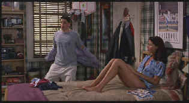

|
American Pie(SE)/B,A- |
|
Universal/1999/96m/ANA 1.85 |
Yes, it’s another coming of age comedy about high school kids, but a little bit extra is served up in this tasty comedy dish from directing brothers Paul and Chris Weitz. This is John Hughes with a twist; a twist of honesty and some graphic inspiration. The broad humor includes obvious sexual peccadilloes, unlikely use of apple pie, and disgustingly spiked drinks. This is not the first imaginative use of apples in an American comedy. Connoisseurs of the act will remember the excellent use Phillip Roth’s protagonist in Goodbye, Columbus made of an apple.
 |
|
Jason entertains Natasha and a few others. ©Universal |
Writer Adam Herz dishes out American Pie in a minimalist
plot. Senior year is almost over and prom fast approaching.
Four friends make a cherry-breaking pact, vowing to
successfully spear the ladies before the school year is out and
prom night appears to be the perfect opportunity for the big
event times four. Before the prom unfolds with little hilarity,
Chris joins a jazz chorus to get near a girl, Jason makes
internet history, at least local high school internet history,
Finch becomes a legend and a laughing stock, and Kevin hits the
books pretty hard.
The actors have a good time doing the
bidding of first time directors Paul and Chris Weitz. Jason
Biggs makes every moment of screen time delightful as Jim.
Alyson Hannigan is hilarious as Michelle, the flute playing dork
full of surprises. Chris Klein pretty much does similar
work to his Election role, once again playing a jock with
innocent charm, but he is effective. Natasha
Lyonne could have had more screen time as Jessica. She is
one funny young actress.
The Weitz Brothers make the most of
their directing debut, displaying a fine sense for comic
situations without letting go of control. The timing is
excellent and the editing makes for a giggly pace. American
Pie is a well-photographed, upbeat physical production. Lots
of natural light permeate the style and enhance the mise en
scenes. Steadicam shots are effectively sprinkled throughout the
shoot.
The outtakes are so hilarious, but,
damn, they are way too short. More outtakes, I say, more. I just
can’t enough of a good thing. Audio commentary is provided by
the Weitz brothers, Adam Herz, Jason Biggs, Eddie Kaye
Thomas, and Seann William Scott. Yes, and it’s just another
party, or seems so, as these guys have lots of fun watching and
reliving the experience of American Pie. The DVD presents the
theatrical R-rated theatrical presentation. American Pie
is also available in a virtually identical Unrated special
editon DVD with some minor difference in the outtakes. The
slightly more pointed content includes a much better pie
sequence.
American Pie is baked into a
delicious DVD. Lots of light output makes the natural lighting
very effective. Contrast has snap and detail is consistently
well rendered. Slight edge enhancement is noticeable is some
scenes, but is never intrusive. The picture is virtually free of
film grain and this meets well with the desired style. Colors
are consistently rich and contained within the boundaries of
their respective objects. The music is given a punchy soundtrack
treatment in Dolby Digital 5:1 surround. Ambient effects are
minimal.
|
The
Feature
Archive has articles ranging from Akira
Kurosawa to Blonde
Bimbos, The
Heistmasters and Frank
Darabont. |
|
Imaging
Science Foundation |
|
HOT
LINKS |
|
Home Theater Reference Reviewing System When you read a DVD review it's of utmost importance to know what equipment is being used to evaluate quality. Click on the projectors to find out more. |